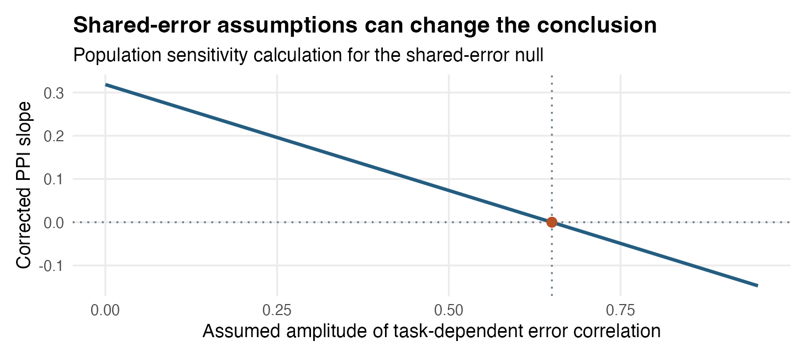

library(medusa)
ppi <- decon_connectivity_repair(
panel_dt = subject_epochs,
seed_region = "Seed",
target_region = "Target",
seed_lag = 0,
target_lag = 0,
covariates = "x_within",
test_ppi = TRUE,
use_whitened = FALSE,
orthogonalize_seed_x = FALSE,
shared_error = "auto",
method = "mmoms",
region_col = "parcel",
id_col = "id"
)
ppi$groupStep 6 · Trial-level connectivity and PPI
Overview
In Step 5, deconvolved neural activity sits on the left-hand side of the regression (Neural ~ Behavior), where zero-mean BOLD measurement noise inflates standard errors without biasing population slope estimates. Step 6 moves a deconvolved parcel readout onto the right-hand side (Target ~ Seed + Task + Seed:Task) to test trial-to-trial functional connectivity and psychophysiological interaction (PPI)—or brain-to-behavior prediction (Behavior ~ Seed).
Placing a noisy deconvolved estimate on the right-hand side creates two immediate statistical hazards that ordinary OLS and lmer() cannot fix:
- Predictor attenuation bias: Trial-level measurement error \(u_i\) in the seed inflates the observed design variance \(X^\top X\), systematically shrinking both the baseline seed connectivity slope and the
Seed:TaskPPI slope toward zero. - Spurious coupling from shared cross-parcel noise: Scanner drift, physiological pulsatility, head motion, and overlapping vascular noise create correlated measurement errors \(\operatorname{Cov}(u_i, v_i) \neq 0\) between seed and target parcels. Disattenuating the denominator without subtracting shared seed–target noise in the numerator amplifies false connectivity—and if shared error varies with task condition, it can manufacture a completely spurious PPI.
Step 6 (decon_connectivity_repair(), backed by medusa_fit_mmom()) addresses these hazards by pairing Step 4’s analytical per-trial error variances (se_demixed^2) and task-free cross-parcel noise innovation correlations (shared_noise_loading / unit_error_cor) with Method-of-Moments with Step-up Regularization (M-MOMS) inside each participant, followed by leverage-guarded Hartung–Knapp–Sidik–Jonkman (HKSJ) random-effects pooling across participants.
Goals of Step 6
Step 6 is designed to accomplish four specific goals:
- Disattenuate noisy neural predictors and PPI interactions: Construct exact per-trial \(q \times q\) predictor measurement-error covariance blocks \(\Psi_i\)—including the off-diagonal error covariance \(x_i s_i^2\) between a noisy seed \(\widehat S_i\) and its task product \(\widehat S_i x_i\)—and subtract them from observed design moments via
medusa_fit_mmom(). - Subtract stationary cross-parcel shared measurement error automatically: Use Step 4’s task-free
unit_error_cormatrix orshared_noise_loadingvectors (shared_error = "auto") to estimate per-trial seed–target error covariance \(\operatorname{Cov}(u_i, v_i)\) (err_xy) without stripping genuine task-evoked neural coupling. - Preserve clear direct vs. reduced-form PPI estimands: Let the analyst choose explicitly whether the seed retains its linear task response (
orthogonalize_seed_x = FALSE, isolating direct connectivity and linear modulation) or is residualized against task covariates with exact error-covariance projection (orthogonalize_seed_x = TRUE). - Pool participant slopes with finite-sample random-effects calibration: Aggregate participant-level M-MOMS slopes at the group level using HKSJ / HC2 leverage-adjusted random-effects inference, treating independent participants as the unit of replication while guarding against extreme low-reliability outlier weights.
What Step 6 leaves outside scope (and requires you to check): Step 6 corrects within-trial additive second-moment measurement error conditional on the operators learned in Steps 1–4. It does not undo unequal cross-parcel source resolution biases (\(K_S \neq K_T\)), model full cross-trial off-diagonal error blocks simultaneously inside M-MOMS, or automatically detect condition-dependent changes in shared physiological/motion noise (\(\operatorname{Cov}(u_i, v_i \mid x_i)\) varying with \(x_i\)). Because task-modulated shared error is indistinguishable from latent PPI using marginal trial SEs alone, Step 6 pairs estimation with explicit shared-error sensitivity diagnostics. For deeper theoretical derivations and full-covariance research prototypes, see From BOLD noise to M-MOM error variances and Measurement-error models and REPAIR.
Inputs: What Step 6 Receives and Why
| Input | Structure | Why Step 6 needs it and why it is shaped that way |
|---|---|---|
panel_dt (subject_epochs list recommended, or group_panel) |
Named list of per-participant decon_epoch_regression() objects (preferred) or stacked data.table |
Pairing seed and target trials requires matching (id, run, trial) rows and consistent physical/noise units across regions. Passing the full subject_epochs list preserves each participant’s full $unit_error_cor matrix from Step 4; passing a stacked data.table falls back cleanly to the $panel$shared_noise_loading list-column (note that plain CSV export drops list-columns unless saved as .rds or Parquet). |
seed_region, target_region, seed_lag, target_lag |
Parcel labels and peri-event lag coordinates (e.g., seed_lag = 0, target_lag = 0 or lagged seed_lag = 0, target_lag = 1.3) |
Identifies the exact paired trial readouts \((W_i, Y_i)\) and their matching analytical measurement SEs (se_demixed) on each trial. |
covariates & test_ppi |
Character vector of centered task covariates; logical test_ppi |
When test_ppi = TRUE, the first column of covariates defines the psychological modulator \(x_i\) for the seed:x interaction, while any additional covariates enter as additive main-effect controls. Task covariates are assumed error-free; centered coding makes the main seed slope interpretable at \(x_i = 0\). |
shared_error |
"auto", "supplied", or "zero" |
Controls how seed–target measurement-error covariance err_xy enters the right-hand moment correction \(X^\top Y - \sum_i \operatorname{Cov}(e_{X,i}, v_i)\). |
Outputs: What Step 6 Produces and Why It Is Set Up That Way
decon_connectivity_repair() returns a structured list separating population inference from participant-level measurement-error diagnostics:
| Output component | Structure & key columns | Why it is set up that way |
|---|---|---|
$group |
data.table with one row per modeled term (seed, task covariates, ppi, optional lagged target control): estimate, std.error, statistic, df, p.value, conf.low, conf.high, tau2, n_subjects |
Reports the HKSJ leverage-adjusted random-effects population mean slope and 95% \(t\)-interval across independent participants, keeping group degrees of freedom anchored to participant count rather than trial count. |
$subjects |
data.table with one row per (id, term): estimate, std.error, n_trials, r_shared_error, shared_error_source, regularization_lambda, converged |
Exposes every participant’s M-MOMS slope, working cross-parcel innovation correlation (r_shared_error), how that correlation was sourced ("unit_error_cor", "shared_noise_loading", or "zero"), and whether step-up moment regularization ("mmoms") intervened on weak design matrices. |
$panel_repair |
Optional paired trial data.table (when return_panel = TRUE) |
Retains exact centered/paired seed, target, modulator, and error-variance columns per (id, run, trial) so analysts can run custom sensitivity curves or inspect outlier trials directly. |
Recommended Settings
| Parameter | Package default | Recommended setting | Why and when to adjust |
|---|---|---|---|
panel_dt |
Required | Named subject_epochs list (or .rds group_panel) |
Retains exact Step 4 cross-parcel noise metadata (unit_error_cor and shared_noise_loading) that plain-text CSV exports lose; see worked handoff check. |
method |
"mmoms" |
"mmoms" (also fit "naive_unweighted" as a baseline comparison) |
"mmoms" applies adaptive step-up regularization when subtracting \(\sum_i \Psi_i\) approaches a non-positive-definite design matrix in noisy participants, preventing explosive small-denominator outliers. Always report "naive_unweighted" alongside "mmoms" in the same coordinates so the magnitude of disattenuation is transparent. |
shared_error |
"auto" |
"auto" + sensitivity check |
Automatically estimates stationary cross-parcel measurement-error correlation from Step 1’s task-free noise_innovations (combining spatial and cross-lag correlation when seed_lag != target_lag). Compare against shared_error = "zero" and condition-dependent sensitivity curves for PPI claims. |
use_whitened |
FALSE |
FALSE |
Pairs decon_demixed with se_demixed in original run-centered coordinates. Separate parcel-specific ZCA matrices (\(T_S \neq T_T\)) mix different neighboring trials into seed and target and do not commute with PPI multiplication (\(T(S \odot x) \neq (TS) \odot (Tx)\)). |
orthogonalize_seed_x |
TRUE |
FALSE when testing direct Seed + x + Seed:x models; TRUE for reduced-form residualized-seed modulation |
When FALSE, seed and x enter symmetrically without altering the quadratic task structure. When TRUE, the seed is first residualized on covariates (projecting diag(se_demixed^2) through \(P D_u P^\top\)); remember that residualizing a task-responsive seed shifts the Seed:x product by a term proportional to \(x^2\). |
control_target_at_seed_lag |
FALSE |
TRUE for Granger-style lagged connectivity (target_lag > seed_lag) |
Adds target activity at seed_lag as an additional error-corrected neural covariate (propagating its own se_demixed^2 and shared_noise_loading) when asking whether seed activity predicts subsequent change in the target region. |
Core Mechanisms in Detail
1. The structural trial model and M-MOMS moment correction
For participant \(s\) and trial \(i\) (after centering seed, target, and task covariates within each participant and run), let \(S_i\) be latent seed activity at seed_lag, \(T_i\) latent target activity at target_lag, and \(x_i\) an error-free centered task modulator:
\[ T_i = \beta_S S_i + \beta_x x_i + \beta_P (S_i x_i) + \varepsilon_i. \]
Here \(\beta_S\) is baseline trial-to-trial coupling at \(x_i = 0\), and \(\beta_P\) is the psychophysiological interaction slope—how much the seed–target slope changes per unit change in \(x_i\) (for \(x_i \in \{-1, +1\}\), \(2\beta_P\) is the slope difference between conditions). Always include both main effects (\(\beta_S\) and \(\beta_x\)) when testing \(\beta_P\) so shared main-effect task activation is not absorbed into the interaction.
Because Step 4 observes noisy readouts \(W_i = S_i + u_i\) and \(Y_i = T_i + v_i\) rather than \((S_i, T_i)\), the observed regressor vector \(X_i = [W_i,\, x_i,\, W_i x_i]^\top\) carries measurement error \(e_{X,i} = [u_i,\, 0,\, x_i u_i]^\top\). Even when \(u_i\) is purely univariate on each trial with variance \(s_i^2 = \texttt{se\_demixed}_i^2\), the seed column and the PPI interaction column share the same noise realization \(u_i\), creating a structured \(3 \times 3\) predictor error covariance block on trial \(i\):
\[ \Psi_i = \operatorname{Cov}(e_{X,i} \mid x_i) = s_i^2 \begin{pmatrix} 1 & 0 & x_i \\ 0 & 0 & 0 \\ x_i & 0 & x_i^2 \end{pmatrix}. \]
Notice two essential features of \(\Psi_i\): - Heteroskedastic interaction error: Trial measurement variance in the PPI column scales with \(x_i^2 s_i^2\), so extreme modulator trials carry amplified measurement noise. - Signed predictor–interaction error covariance: Whenever \(x_i \neq 0\), the off-diagonal entry \(x_i s_i^2\) is nonzero (and negative when \(x_i < 0\)). Passing diagonal SEs without this off-diagonal term miscalibrates both main and interaction slopes.
Meanwhile, if seed and target measurement errors correlate (\(\operatorname{Cov}(u_i, v_i \mid x_i) = c_i\)), the observed cross-product \(X^\top Y\) is also biased by \(\sum_i [c_i,\, 0,\, x_i c_i]^\top\). M-MOMS solves the bias-corrected normal equations (with step-up eigenvalue regularization when \(X^\top X - \sum_i \Psi_i\) nears singularity):
\[ \left(X^\top X - \sum_{i=1}^n \Psi_i\right) \widehat\beta = X^\top Y - \sum_{i=1}^n \begin{pmatrix} \operatorname{Cov}(u_i, v_i \mid x_i) \\ 0 \\ x_i \operatorname{Cov}(u_i, v_i \mid x_i) \end{pmatrix}. \]
Under shared_error = "auto", decon_connectivity_repair() populates \(\operatorname{Cov}(u_i, v_i) = \widehat r_{ST} \, s_{S,i} s_{T,i}\) using participant \(s\)’s task-free innovation correlation \(\widehat r_{ST}\) from Step 4 (unit_error_cor, or the inner product of shared_noise_loading vectors). That automatically removes stationary cross-parcel background noise correlation without needing resting-state scans or manual calibration.
3. Sensitivity analysis and reporting checklist for Step 6
Because stationary background noise correlation (shared_error = "auto") removes baseline cross-parcel shared error \(\operatorname{Cov}(u, v) = r_0 \sigma_S \sigma_T\) (which biases main-effect seed connectivity) while condition-modulated cross-error \(\Delta r \cdot x_i \sigma_S \sigma_T\) threatens ppi, every empirical PPI claim should evaluate how sensitive its conclusion is to plausible condition-dependent error correlation:

As Figure 8.2 shows, plotting the implied M-MOMS interaction slope across a range of hypothetical task-modulated cross-error correlations \(r(x)\) immediately reveals how strong condition-locked artifact coupling would have to be to explain away an observed PPI effect. Pair this sensitivity check with physiological/motion nuisance regressors in Step 1/2 (nuisance_list), framewise displacement stratified checks, and a negative-control reference parcel that shares vascular/physiological noise proximity without the hypothesized circuit connection.
When reporting a Step 6 connectivity or PPI analysis, always document:
- Circuit & lag specification: Exact
seed_region,target_region,seed_lag,target_lag, whethercontrol_target_at_seed_lagwas included, and the prespecified multiplicity family across region pairs and lags. - Covariate centering & orthogonalization: Coding of the modulator \(x_i\), included main effects, and whether
orthogonalize_seed_xwasFALSE(direct model) orTRUE(residualized-seed model). - Naive vs. M-MOMS comparison: Side-by-side
naive_unweightedandmmomsestimates in identical coordinates (use_whitened = FALSE) so readers see both raw and disattenuated magnitudes. - Shared-error provenance & participant diagnostics: Summary of
ppi$subjects$r_shared_error,shared_error_source, participant/trial counts, anymmomsstep-up regularization triggers, and sensitivity toshared_error = "zero"vs."auto"(plus condition-specific noise checks for PPI).
Reproduce the Step 6 Demonstrations
Show reproduction commands
Rscript simulate.R
Rscript figures.R
quarto render medusa_step6_connectivity.qmdSimulation source · Figure source · Summary metrics · Replication draws · Simulation log